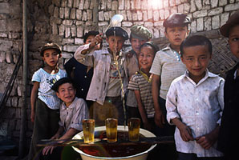
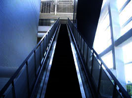
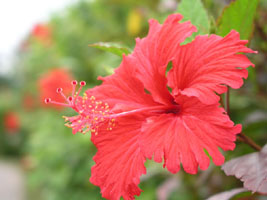
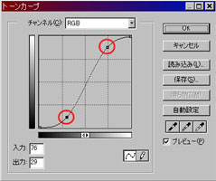
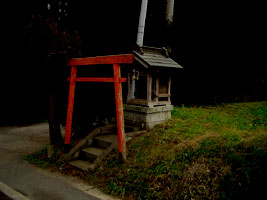
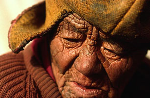
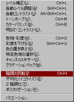

section 05
フィルタの活用
|
フィルタとは、あらかじめ決められた法則に従って、画像に特殊効果を加えるコマンドです。
Photoshopの面白いところは、フィルタを使うだけで、画像をプロの作品のように仕上げることができる点です。 |
|
元となる画像はこちらです。この画像に色々なフィルタを実行していきます。 | |
|
■アーティスティック「ドライブラシ」 | |
|
■シャープ「アンシャープマスク」 | |
|
■スケッチ「グラフィックペン」 | |
|
■テクスチャ「テクスチャライザ」 | |
|
■ノイズ「ノイズを加える」 | |
|
■ピクセラレート「モザイク」 | |
|
■ビデオ | |
|
■ブラシストローク「ストローク（暗）」 | |
|
■ぼかし「ぼかし（放射状）」 | |
|
■表現手法「エンボス」 | |
|  |
■描画「逆光」 |
|
■変形「球面」 | |
|
■その他 |
色調補正画像の編集で最も大事なことは、「色」の調節です。その画像に何が描かれていたとしても、最終的にその画像の印象を決定付けるのは「色」だからです。 |
|
■レベル補正 | |
|  |
|  |
■トーンカーブ |
|  | |
|
■明るさ・コントラスト | |
|  | |
|
■色相・彩度 | |
|  |
■階調の反転 |
|  | |
|
ちょっと待った！ |
|
A「画像の中に綺麗な文字を入れたいときは、【テキストツール】を使いましょう。 | |
|
文字を入れ終わったら、右上にある○を押してください。これを押さないと文字が書き込まれません。 | |
|
このレイヤーに色を塗りたい時や色調を変えたい時は、このレイヤーを右クリックしてください。 | |
|
こうすることで、そのレイヤーは普通のレイヤーになって、編集ができるようになります。 |